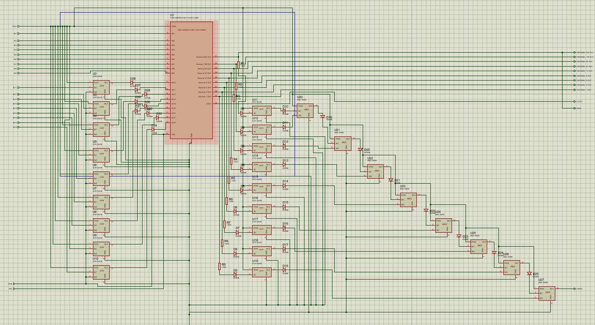
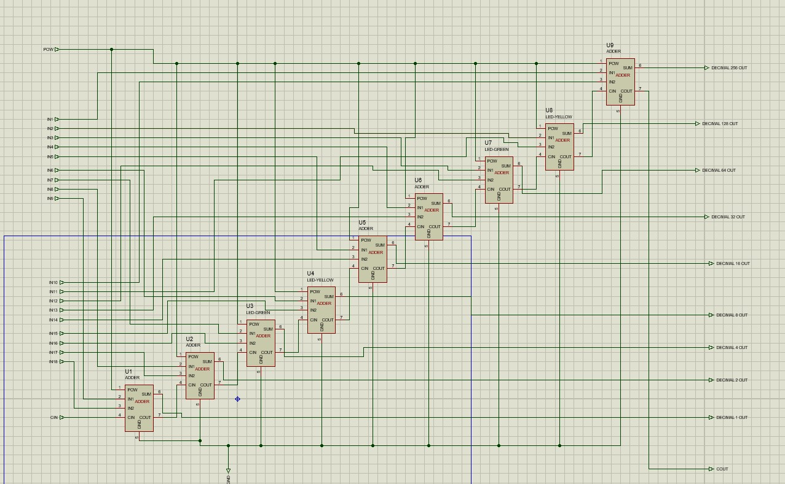
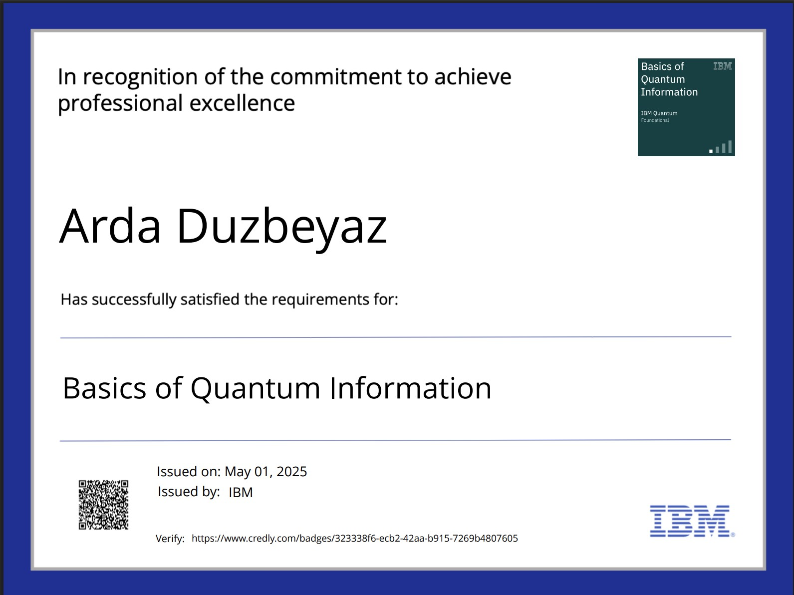
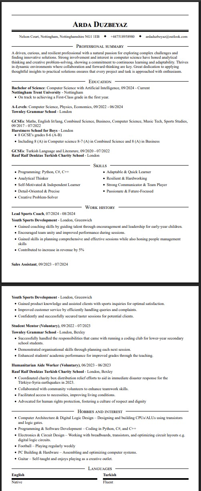
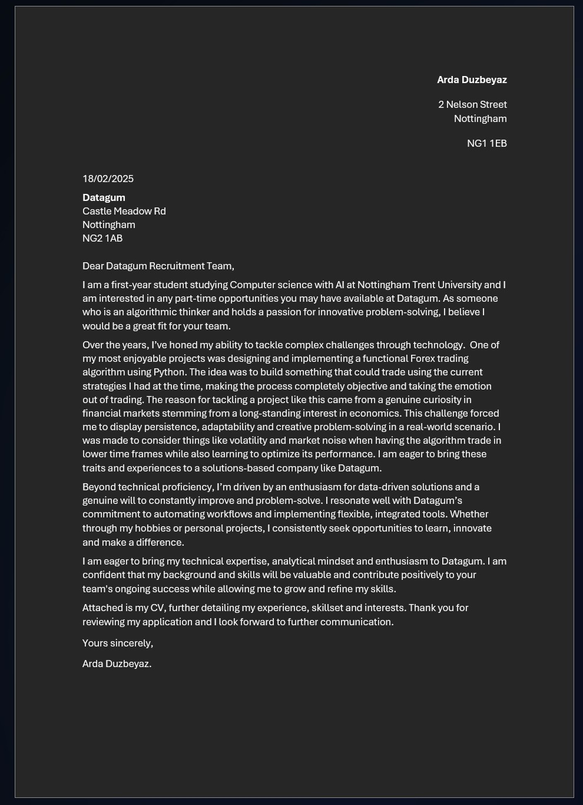
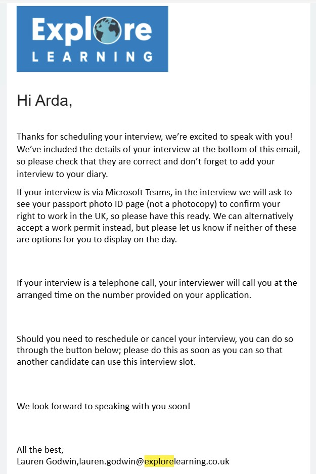

Knowledge and Skills Development
Built 1 bit ADDER on Breadboards and designed a digital ALU
Type: Technical
Date: November 5th 2024
Hours Claimed: 8
Due to my interest in computing as a whole and my ambition to work in the field of quantum computing, I tasked myself with building and designing a CPU. I installed a program that would allow me to simululate circuits and elcetronics such as transistors and resitors which allow me to build logic gate circuits. Using this I managed to build an entire ALU (Arithmetic Logic Unit) this is what handles the operations on classical processors. The reason for simulating the raw circuits themselves instead of just the logic gates was because my plan was to attempt to build this ALU in real life, which is what I attempted. I managed to build a 1 bit adder and a portion of a second one bit adder.
This is highly relevant to quantum computing as my goal is to master classical computer architecture as this is what enables you to begin to understand quantum computer architecture because a quantum computer is still a computer just with different properties.


The above images showcase my digital ALU the first picture contains and 8 bit adder chip along with all the logic required that allows it to be able to handle subtraction. The second image shows the inside of the 8 bit adder and shows the real core building blocls of the adder which in this case is 8 single bit adders. It is one of these single bit adders that I successfully built in real life with the raw transistors. Video of my 1 bit adder evidence on youtube
My next steps in the short term is to finish a completed ALU in real life. My long term next steps is to finish an entire CPU in real life and program it allowing me to really understand the innerworkings.
Completed Java Course
Type: Technical
Date: April 27th 2025
Hours Claimed: 5
In order to master classical computer science so that I can find myself in the position to master and understand quantum computing, I finished a complete java programming course from a website called sololearn. This allowed me to transfer all my advanced programming skills from C++ and python to java diversifying my programming skill set.
This is relevant to quantum computing as it is one of the requirements to know and understand the java programming langueage as spoken about in the previous pages of this site. Java is a classical programming language that is also used to implement hybrid quantum-classical algorithms or interface with quantum hardware.
My next steps in the short term is to finish practice java more and create an intermediate solid and functional project. My long term next steps is to keep practicing and work an very advanced projects such as physics simulations this will also set me up for building hybrid quantum-classical software.
.jpg)
Completed Basics of Quantum Information Course
Type: Technical
Date: May 28th 2025
Hours Claimed: 8
As you know from my previous pages on this site there is big requirement for understanding the theory of quantum computing. This involves understanding quantum gates and quantum information such as 1 and 0's in superposition states and entanglement. Therefore I tasked myslef with completing a quantum information course form IBM's quantum learning site. The course was difficult and contain complex mathematics that are also required.
This was highly relevant to quauntum computing as it satisfys many of the requirements Ive highlighted in my previous pages. Especially Quantum Mechanics & Quantum Theory, Mathematics Linear Algebra, Probability theory and Quantum Computing theory
My next steps after this in the short term is to continue studying the way quantum computers work. In the long term my plan is to understand and be able to code in a quantum programming language such as Qiskit

Created my CV
Type: Professional
Date: February 5th 2025
Hours Claimed: 3
I created my professional CV with the help of my older sister that has extensive experience in working in recruitment.
This is relevant to quantum computing because it is my CV where all my skills and past experiences will be showcased. It is with my CV that I will be able to apply for a job in quantum computing in the future.
My next steps after this in the short term is to find myself a relevnat partime job in computer science the extra money will allow me to invest in things that will let me work on bigger, better and more complicated projects. In the long term my plan is to continue doing things that I can add to my CV to improve my chances in succeeding in the field and hopefully land a solid placement thats relevant.

Wrote a cover letter for a company called DataGum
Type: Professional
Date: November 15th 2025
Hours Claimed: 4
I created a professional cover letter for a data solutions software company and applied to it while also using the CV I made.
This is relevant to quantum computing because the company is software oriented so it is in the field of computer science. In addition writing cover letters like this provides great pratice for when I would need to create a cover letter when applying for a job in quantum computing
My next steps after this in the short term is to continue practice writing cover letter by aplying for relevant jobs and internships. My long term next steps is to hopefully be at a point where my cover letters are highly professional I will be able to land a quantum computing job.

Landed an Interview at company called Explore learning Tutor
Type: Professional
Date: March 5th 2025
Hours Claimed: 4
I Landed an interview at a company called explore learning for tutoring maths and english
This is relevant to quantum computing because I have gained interveiew experience allowing me to be ready for quantum computing interviews. Also having a part time job will help with funding my future projects.
My next steps after this in the short term is to continue to apply for part time jobs giving me more interview experience. My long term next steps is to be land a job that is very close to the field of quantum computing using my devoloped interview skills.
